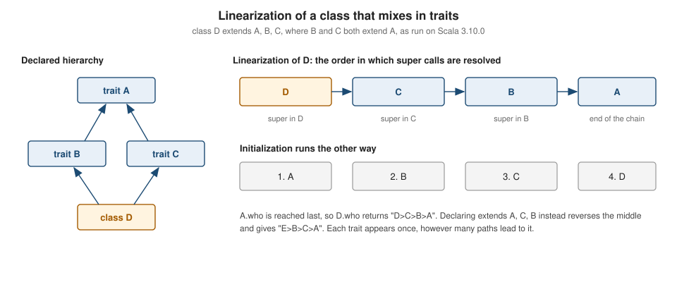

Traits & Mixins
|
This content was generated with the assistance of AI and should be verified against the official documentation before being relied on in production. |
This page is written against Scala 3.10 (3.10.0, 2026-10-12) and every example was run with Scala CLI and Scala 3.10.0
on JDK 26 on 2026-10-15 (the examples were not re-run on 3.9 or 3.3). Traits themselves are as old as Scala; the Scala 3
additions on this page are trait parameters and transparent traits (both Scala 3.0), the comma form of extends
(3.0) and the -Wsafe-init check (called -Ysafe-init on 3.3 LTS, renamed by 3.9; run on both). Everything else works on the 3.9 LTS and 3.3 LTS lines.
A trait is a unit of reusable behaviour and state that a class mixes in. It is Scala’s counterpart of a Java interface
with default methods, but a trait can also hold fields and constructor parameters, and a class can mix in any number of
them. Combined with the rules for linearization, which decide what super means in each trait, this gives mixin
composition: building a class (or a single object) out of small, independently written pieces. The related topics have
their own pages: Classes & Constructors for classes,
Inheritance: Abstract, Sealed, Open & Final
for abstract classes and sealed, and
Composition, Export & Self Types for self types and
export. The examples use the trailhead scenario of this section: a toolkit that plans hikes on a network of
mountain trails.
Traits: abstract and concrete members
A trait is declared with trait. It can contain abstract members (declared without a body) and concrete ones (def,
val, var, lazy val, type members, nested classes). A class that extends the trait must implement every abstract
member, and inherits the concrete ones.
//> using scala 3.10.0
trait Trail:
def name: String // abstract member
def lengthKm: Double // abstract member
val grade: Int = 1 // concrete member, initialized
def describe: String = s"$name ($lengthKm km, grade $grade)" // concrete method
trait Signposted:
def signs: List[String] = Nil
class Aguja(val lengthKm: Double) extends Trail:
def name = "Aguja"
class Ridge extends Trail, Signposted: // comma form, Scala 3
def name = "Ridge"
def lengthKm = 4.5
override def signs = List("north", "summit")
@main def e1(): Unit =
println(Aguja(7.5).describe)
val r = Ridge()
println(r.describe)
println(r.signs)
val anon = new Trail:
def name = "Anonymous"
def lengthKm = 1.0
println(anon.describe)
println(r.isInstanceOf[Signposted])Aguja (7.5 km, grade 1)
Ridge (4.5 km, grade 1)
List(north, summit)
Anonymous (1.0 km, grade 1)
trueSource: Scala 3 Book: Traits
The points to take from the example:
-
Implementing an abstract member needs no
override.overrideis required only when a member replaces a concrete one. Avalor a constructorvalparameter (lengthKminAguja) can implement an abstractdef. -
A trait can be instantiated anonymously with
new Trail:followed by an indented body, asanonshows. A trait cannot be instantiated by name, because it may have abstract members. -
A trait is a type.
r.isInstanceOf[Signposted]istrue, and a value of the class can be passed wherever aTrailor aSignpostedis expected. -
A trait can hold state:
val,varandlazy valmembers are allowed. Avarin a trait is compiled to a getter, a setter and a field in every class that mixes the trait in; the next sections show the consequences for initialization.
//> using scala 3.10.0
trait Counter:
var count = 0
def inc(): Unit = count += 1
private def hidden = 1
protected def prot = 2
lazy val big = { println("computing"); 99 }
class K extends Counter
@main def t10(): Unit =
val k = K()
k.inc(); k.inc()
println(k.count)
println(k.big + k.big)
println(classOf[Counter].isInterface)
println(classOf[Counter].getDeclaredMethods.map(_.getName).sorted.toList)2
computing
198
true
List($init$, big, big$, count, count_$eq, hidden, inc, inc$, prot, prot$)Source: Scala 3 Book: Traits
On the JVM a trait is compiled to an interface (isInterface is true), and the concrete members become default-style
methods plus static forwarders (inc$, big$) that the mixing-in class calls; the fields live in the class. This is why a
Java class can implement a Scala trait that has only abstract members, but a trait with concrete state is best consumed
from Scala; see Calling Scala from Java.
Extending traits and mixin composition
A class extends at most one class and any number of traits. Scala 3 writes the parents as a comma-separated list after
extends; the older form, still accepted, uses with between them. Both mean the same thing. A trait can also be mixed
in at the instantiation of a single object, without declaring a class.
//> using scala 3.10.0
trait Trail:
def name: String
trait Signposted:
def signs: List[String] = Nil
trait Lit:
def lit: Boolean = true
class Base extends Trail:
def name = "Base"
class Night extends Base, Signposted, Lit // class extends class, then traits
class Night2 extends Base with Signposted with Lit // Scala 2 form, still valid
@main def e2(): Unit =
val a = Night()
val b = new Base with Signposted with Lit // mix in at the instance
println(a.getClass.getName + " " + a.lit)
println(b.name + " " + b.signs + " " + b.lit)
println(b.getClass.getName)
val s: Signposted & Lit = b
println(s.lit)Night true
Base List() true
e2$package$$anon$1
trueRules for the parent list:
-
The class comes first, if there is one. Every other parent must be a trait. A trait itself may extend a class (
trait Needs extends Base); the trait can then be mixed in only by classes that are themselves subclasses of that class, as the next example shows. -
A type can be built from traits without a class:
Signposted & Litis an intersection type (see Union & Intersection Types). -
withbetween types in a type position is gone. In Scala 3,A with Bas a type is rejected on 3.10.0 ("with as a type operator has been deprecated; use & instead"; it can be rewritten automatically under-rewrite -source 3.4-migration) in favour ofA & B; thewiththat remains legal is the one in a parent list, as innew Base with Signposted. -
A class that is both parent and mixin of an anonymous object works as
new Base with Signposted with Litabove; the compiler generates an anonymous class (e2$package$$anon$1).
//> using scala 3.10.0
class Base(val id: Int)
trait Needs extends Base:
def show = s"id=$id"
class Impl extends Base(7), Needs
@main def t5(): Unit = println(Impl().show)id=7Source: Scala 3 Book: Mixin Composition
A class that extends Needs without extending Base (or without passing the constructor argument) is rejected:
[error] ./t6.scala:4:7
[error] missing argument for parameter id of constructor Base in class Base: (id: Int): Base
[error] class Bad extends Needs
[error] ^Linearization and super
When a class mixes in several traits, the call super.m() inside one of them cannot mean "the parent": a trait does not
know which class it will be mixed into. Scala resolves super through the linearization of the class, a single chain
that lists the class, then its parents from last to first (each with its own ancestors), and keeps only the last
occurrence of any type. Reading that chain left to right gives the order in which super calls are searched.
//> using scala 3.10.0
trait A:
def who: String = "A"
trait B extends A:
override def who: String = "B>" + super.who
trait C extends A:
override def who: String = "C>" + super.who
class D extends A, B, C:
override def who: String = "D>" + super.who
class E extends A, C, B:
override def who: String = "E>" + super.who
@main def e3(): Unit =
println(D().who)
println(E().who)D>C>B>A
E>B>C>AFor D the linearization is D, C, B, A, so super in D is C, in C is B, in B is A. Swapping the order of
B and C in the parent list (class E) swaps them in the chain. A appears once even though two traits extend it;
this is what makes the "diamond" harmless in Scala.

Constructor bodies run in the opposite direction, from the root of the chain to the class itself:
//> using scala 3.10.0
class Base:
println("Base")
trait A extends Base:
println("A")
trait B extends A:
println("B")
trait C extends A:
println("C")
class D extends Base, B, C:
println("D")
@main def e8(): Unit =
D()Base
A
B
C
DSource: Scala 3 Book: Mixin Composition
Conflicting members and super[T]
If two traits define the same concrete member, the compiler does not pick one: the class must override it.
[error] ./t7.scala:6:7
[error] error overriding method hello in trait A of type => String;
[error] method hello in trait B of type => String class C inherits conflicting members:
[error] method hello in trait A of type => String and
[error] method hello in trait B of type => String
[error] (Note: this can be resolved by declaring an override in class C.)
[error] class C extends A, B
[error] ^The override can name the implementation it wants with super[T], a static super reference to a direct parent:
//> using scala 3.10.0
trait A:
def hello: String = "A"
trait B:
def hello: String = "B"
class C extends A, B:
override def hello = super[A].hello + "+" + super[B].hello
@main def t8(): Unit = println(C().hello)A+BWhen the two members are in a subtyping relation (B extends A and overrides who, as in the linearization example) no
conflict arises: the more specific one wins.
Stackable traits
Because super follows the linearization, a trait can modify what an abstract parent computes and let the next trait in
the chain modify the result. This is the stackable modification pattern. A trait whose super call targets an
abstract member must say so with abstract override; the member becomes concrete only when the trait is mixed into a
class that implements it.
//> using scala 3.10.0
abstract class Route:
def steps: List[Double] // km per leg
trait Doubling extends Route:
abstract override def steps: List[Double] = super.steps.map(_ * 2)
trait Rounding extends Route:
abstract override def steps: List[Double] = super.steps.map(d => math.round(d).toDouble)
trait Filtering extends Route:
abstract override def steps: List[Double] = super.steps.filter(_ > 1.0)
class Plain extends Route:
def steps = List(0.4, 1.3, 2.6)
@main def e4(): Unit =
println((new Plain with Doubling with Rounding).steps)
println((new Plain with Rounding with Doubling).steps)
println((new Plain with Filtering with Doubling).steps)
println((new Plain with Doubling with Filtering).steps)List(1.0, 3.0, 5.0)
List(0.0, 2.0, 6.0)
List(2.6, 5.2)
List(2.6, 5.2)The order of the mixins changes the result. In Plain with Doubling with Rounding the last trait runs first and super
leads inwards: Rounding rounds the output of Doubling (0.8, 2.6, 5.2 becomes 1, 3, 5). Swapping the two rounds first
and then doubles (0, 1, 3 becomes 0, 2, 6). The two Filtering lines agree only because filtering on > 1.0
happens to give the same list on both orders for this data; do not assume it in general.
Without the modifiers the compiler refuses the trait, because super.steps is abstract at the point of the call:
[error] ./t9.scala:5:24
[error] method steps in trait Plan is accessed from super. It may not be abstract unless it is overridden by a member declared `abstract' and `override'
[error] override def steps = super.steps.map(_ * 2)
[error] ^^^^^^^^^^^An effective ordering rule: a trait that uses abstract override is a decorator of the class it is mixed into. Put the
concrete implementation first, then the decorators, from innermost to outermost.
A second view of the same rule, with concrete traits in a chain:
//> using scala 3.10.0
trait Greeter:
def greet(): String = "hi"
trait Shout extends Greeter:
override def greet() = super.greet().toUpperCase
trait Excl extends Greeter:
override def greet() = super.greet() + "!"
@main def t11(): Unit =
val g: Greeter = new Greeter with Shout with Excl
println(g.greet())
println(g.getClass.getInterfaces.map(_.getSimpleName).toList)HI!
List(Shout, Excl)Source: Scala 3 Book: Mixin Composition
Trait parameters
Since Scala 3.0 a trait can take parameters, like a class:
//> using scala 3.10.0
trait Greeting(val name: String):
def msg = s"Hello, $name"
class Hiker extends Greeting("hiker")
class Guide(n: String) extends Greeting(n)
trait FormalGreeting extends Greeting: // does not pass the argument
override def msg = s"Good day, $name"
class Warden extends Greeting("warden"), FormalGreeting // OK: argument given once, by the class
@main def e5(): Unit =
println(Hiker().msg)
println(Guide("Ana").msg)
println(Warden().msg)Hello, hiker
Hello, Ana
Good day, wardenThe rules, all enforced by the compiler:
-
A class must pass the arguments, once, when it extends the trait directly. Forgetting them is an error.
-
A trait cannot pass arguments to another trait (
trait Bad2 extends Greeting("x")). A trait that extends a parameterized trait simply extends it by name, asFormalGreetingdoes, and the first class that mixes it in supplies the value. -
The arguments are given once. Extending the same trait twice with arguments is an error.
-
If a class inherits a parameterized trait indirectly, through another trait, it still must pass the arguments itself.
[error] ./e5err.scala:6:20
[error] missing argument for parameter name of constructor Greeting in trait Greeting: (name: String): Greeting
[error] class Bad1 extends Greeting // missing argument
[error] ^^^^^^^^
[error] ./e5err.scala:7:20
[error] trait Bad2 may not call constructor of trait Greeting
[error] trait Bad2 extends Greeting("x") // trait passes argument
[error] ^^^^^^^^^^^^^
[error] ./e5err.scala:8:35
[error] trait Greeting is extended twice
[error] class Bad3 extends Greeting("a"), Greeting("b")
[error] ^^^^^^^^^^^^^Trait parameters replace Scala 2’s early initializers (new { val name = "x" } with Trail), which Scala 3 dropped. The
old form now fails to parse:
[error] ./e9.scala:21:35
[error] Early definitions are not supported; use trait parameters instead
[error] println((new { val name = "x" } with Trail).label)
[error] ^^^^Transparent traits
Trait mixins can pollute inferred types. When Scala infers the type of if flag then Aguja() else Ridge() it computes the
join of the two classes, and a trait that both extend appears in it:
//> using scala 3.10.0
trait Trail
trait Signposted // an ordinary trait
class Aguja extends Trail, Signposted
class Ridge extends Trail, Signposted
@main def t1(flag: Boolean): Unit =
val a = if flag then Aguja() else Ridge()
val x: Int = a[error] ./t1.scala:11:16
[error] Found: (a : Trail & Signposted)
[error] Required: Int
[error] val x: Int = a
[error] ^The deliberate type error shows the inferred type, Trail & Signposted. Marking the helper trait transparent tells the
compiler never to infer it as a common supertype:
//> using scala 3.10.0
trait Trail
transparent trait Signposted // never inferred as a common supertype
class Aguja extends Trail, Signposted
class Ridge extends Trail, Signposted
@main def t2(flag: Boolean): Unit =
val a = if flag then Aguja() else Ridge()
val x: Int = a[error] ./t2.scala:11:16
[error] Found: (a : Trail)
[error] Required: Int
[error] val x: Int = a
[error] ^The standard library applies this to Product, Comparable, java.io.Serializable and scala.Enum, which is why mixing
in Serializable or Product (case classes do both) does not show up in inferred types. When the only common parent is transparent, the compiler has nothing left to infer
but the union of the two classes:
//> using scala 3.10.0
transparent trait Plain
class P2 extends Plain with java.io.Serializable
class P3 extends Plain with java.io.Serializable
@main def e7d(flag: Boolean): Unit =
val a = if flag then P2() else P3()
val x: Int = a[error] ./e7d.scala:9:16
[error] Found: (a : P2 | P3)
[error] Required: Int
[error] val x: Int = a
[error] ^(Without transparent, the same program infers Plain.) Use transparent for marker traits that carry no
abstraction, such as capability or serialization tags, so that they do not leak into the types of expressions and
collection literals. A transparent trait is still an ordinary trait for subtyping: a above can still be used as a
Plain when you ask for one.
Initialization order
The linearization order of constructor bodies (see above) has a classic consequence: a val in a trait is initialized
when the trait’s body runs, before the body of the class that mixes it in. A trait body that reads a member which the
class defines later sees the default value, null or 0.
//> using scala 3.10.0
trait Trail:
val name: String
val label = s"Trail $name" // reads name during Trail's initialization
class Ridge extends Trail:
val name = "Ridge"
class Fixed extends Trail:
val name = "Fixed"
override val label = s"Trail $name"
@main def e9c(): Unit =
println(Ridge().label)
println(Fixed().label)
println((new Trail { val name = "anon" }).label)Trail null
Trail Fixed
Trail nullThe compiler does not complain; the first line is the bug. The usual remedies, in order of preference:
-
Turn the dependent member into a
defor alazy val.lazy val labelis computed on first use, after construction://> using scala 3.10.0 trait Trail: def name: String lazy val label = s"Trail $name" class Ridge extends Trail: val name = "Ridge" @main def e9b(): Unit = println(Ridge().label)Trail Ridge -
Pass the value as a trait parameter, which is initialized before the trait body runs:
//> using scala 3.10.0 trait Trail(val name: String): val label = s"Trail $name" class Ridge extends Trail("Ridge") @main def e10(): Unit = println(Ridge().label)Trail Ridge -
Override the dependent member in the class after defining its inputs (
Fixedabove).
The same problem causes a NullPointerException when the early read is a method call:
//> using scala 3.10.0
trait A:
val x: String = { println("init A"); "a" }
val len: Int = y.length // reads y before B initialised it
def y: String
trait B extends A:
val y0 = { println("init B"); "yy" }
def y = y0
@main def e6(): Unit =
try
val b = new B {}
println(b.len)
catch case e: NullPointerException => println("NPE: " + e.getMessage)init A
NPE: Cannot invoke "String.length()" because the return value of "A.y()" is null-Wsafe-init
The compiler option -Wsafe-init (spelled -Ysafe-init on 3.3.8, where -Wsafe-init is ignored with a "bad option" warning; checked on 3.3.8, 3.9.0 and 3.10.0) turns on a static check that warns about reads of
not-yet-initialized members, including across traits. It is off by default. With the option enabled, the same pattern
produces warnings that show the call trace:
//> using scala 3.10.0
//> using option -Wsafe-init
trait A:
val len: Int = y.length
def y: String
trait B extends A:
val y0 = "yy"
def y = y0
class Pt:
val a = b + 1
val b = 2
println(s"a=$a b=$b")
@main def e6b(): Unit =
println(new B {}.len)
Pt()[warn] ./e6b.scala:13:7
[warn] Access non-initialized value b. Calling trace:
[warn] ├── class Pt: [ e6b.scala:11 ]
[warn] │ ^
[warn] └── val a = b + 1 [ e6b.scala:12 ]
[warn] ^
[warn] val b = 2
[warn] ^
[warn] ./e6b.scala:8:7
[warn] Access non-initialized value y0. Calling trace:
[warn] ├── println(new B {}.len) [ e6b.scala:17 ]
[warn] │ ^^^^^^^^
[warn] ├── trait A: [ e6b.scala:4 ]
[warn] │ ^
[warn] ├── val len: Int = y.length [ e6b.scala:5 ]
[warn] │ ^
[warn] └── def y = y0 [ e6b.scala:9 ]
[warn] ^^
[warn] val y0 = "yy"
[warn] ^The program still compiles and then fails at run time with the same NullPointerException: the check reports, it does not
fix. It is a best-effort analysis (it can miss cases and, rarely, report false ones), so treat it as a lint for library
code that mixes traits heavily. Two further rules help: avoid reading other members in a trait’s constructor body when
you can, and mark a class final or sealed where possible so the analysis sees every subclass.
Traits versus abstract classes
Scala 3 removed most of the technical reasons for choosing an abstract class over a trait:
| Concern | Trait | Abstract class |
|---|---|---|
Number of parents |
any number |
at most one |
Constructor parameters |
yes, since Scala 3.0 (trait parameters) |
yes |
State and concrete members |
yes |
yes |
Java interoperability |
a pure-abstract trait is an interface; one with state is awkward to extend from Java |
a normal Java superclass |
Instantiation with |
not by name (anonymous |
not by name either, but subclasses are easy to construct |
Multiple inheritance of behaviour |
yes, linearized |
no |
The rules of thumb:
-
Default to a trait. It composes, it has no argument-passing ceremony beyond the rules above, and it never uses up your one allowed parent class.
-
Use an abstract class when Java code has to extend it, when you want a base with a constructor whose arguments the subclasses must supply positionally, or when you want a stable binary layout for a library class hierarchy.
-
Do not mix in a trait that extends a class unless the class is part of the contract. Such a trait restricts every user.
-
Prefer
sealed traitpluscase class`es or an `enumfor closed hierarchies; see Case Classes, Enums and Algebraic Data Types & GADTs.
Kotlin interfaces and Java interfaces with default methods are the closest relatives: they allow multiple implementation inheritance but no per-instance state, and Java has no equivalent of linearization (a conflict must always be resolved by the class). In Scala 2, trait parameters did not exist, which is the main reason older code reaches for abstract classes.
Where the books are outdated
The books consulted for this section (see the section bibliography) were written for Scala 2 or for the first Scala 3 releases. For traits and mixins, treat these points as superseded by the pages cited here:
-
Trait parameters are described as "not allowed" in Scala 2 books; since Scala 3.0 they are, with the rules above.
-
Early initializers (
new { val x = 1 } with T) are the Scala 2 answer to initialization-order bugs; they are an error in Scala 3. Use trait parameters orlazy val. -
withas the separator inextends A with Band in types such asA with Bis the Scala 2 style. Scala 3 prefers a comma in the parent list and&in types;within a type is an error on 3.10.0. -
transparent traitdoes not exist in the Scala 2 books. -
-Wsafe-init(earlier-Ysafe-init) is a Scala 3 option; Scala 2 books suggestlazy valand early initializers only. -
Linearization,
abstract override, stackable traits andsuper[T]are unchanged since Scala 2 and the explanations still hold.
The run results above are from 2026-10-15 on Scala 3.10.0 and were not re-run on the 3.9 LTS or 3.3 LTS releases.